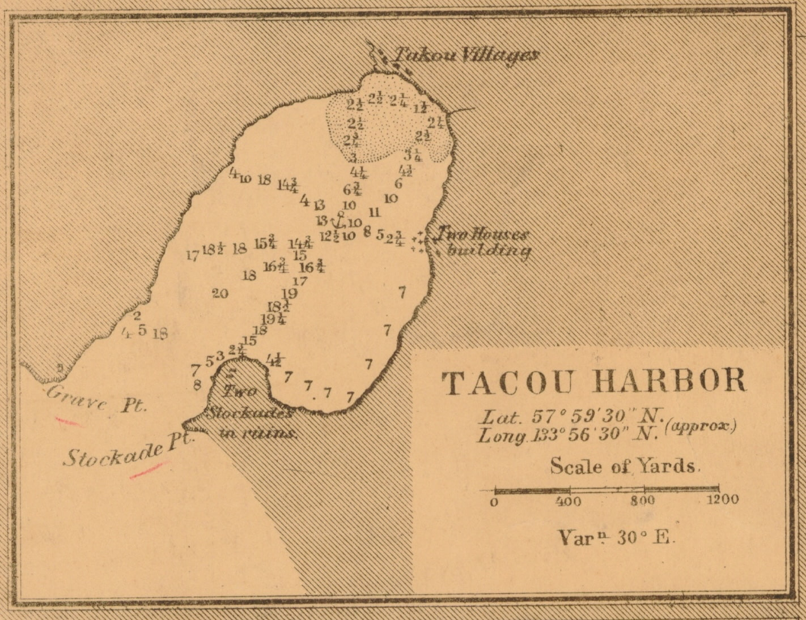

Chronology
Timeline
Precontact – present
Tlingit settlement at Taku Inlet
The Taku Kwáan occupy the Taku River drainage and inlet, using the harbor as a seasonal and semi-permanent village site. Salmon fishing, eulachon harvesting from the Taku River, and maritime trade define the economy.
1840
Fort Durham established
The Hudson’s Bay Company constructs a trading post at or near Taku Harbor, intended to tap the interior fur trade and challenge both Russian America and the Tlingit middlemen who controlled access to inland trading networks.
1843
Fort Durham abandoned
The post closes after only three years, likely due to a combination of difficult relations with local Tlingit groups, competition with the Russian-American Company, and insufficient returns from the fur trade at this location.
1867
Alaska Purchase
The United States acquires Alaska from Russia. The region around Taku Harbor transitions to American jurisdiction, though federal presence in remote southeast Alaska remains minimal for years.
1882 – 1884
Presbyterian missionary activity
As part of what would become Sheldon Jackson’s Alaska mission network, Presbyterian missionaries extend into Taku River and later conducting services at Taku Harbor. Church later reconstructed in Juneau as the Native Presbyterian church.
Salmon cannery established
Large scale commercial salmon processing in Taku Harbor— San Juan Fishing & Packing Company, including first cold storage in Alaska (1901 to 1903), Pacific Cold Storage (1903 to 1905), Taku Alaskan Packing Company (1906), John L. Carlson & Company (1907 to 1911), Taku Canning & Cold Storage Company (1911 to 1917), Libby, McNeil & Libby (1918 to 1947), and dismantled in 1951.
1952 to 1983
Cannery closes, transition to recreation
Like many canneries in southeast Alaska, the Taku Harbor facility eventually ceases operation as salmon stocks plummet from overfishing. Buildings deteriorate and forest begins to reclaim the site. Tiger Olsen, the last employee of Libby, maintains what remains with seasonal residents Father Hubbard and Gordon Meyer.
Alaska State Marine Park
Most of Taku Harbor is managed as a state marine park with surrounding Tongass National Forest, preserving the anchorage and trails. Cannery pilings and machinery remain visible. Tlingit settlement sites and Fort Durham have been reclaimed by the forest.
Tlingit history
The Taku Kwáan
The people of Taku Inlet — the Taku Kwáan — are a clan grouping within the Tlingit nation whose territory centers on the Taku River drainage and the inlet that bears their name. The river itself was one of the most productive eulachon fisheries in southeast Alaska, and the oily fish rendered into grease that was traded widely across the region along established “grease trails.” Tlingit people from the Stikine River — the Shtax’héen Kwáan — are also thought to have used Taku Harbor and Limestone Inlet, reflecting the overlapping seasonal use and trade networks that connected communities across southeast Alaska.
The harbor, known as S’iknax̲sáankʼi, was a natural gathering place: protected anchorage, access to salmon runs, proximity to the river. Tlingit use of the site predates European contact by centuries and continues into the present in the form of subsistence fishing and cultural connections to the land.
The arrival of Russian traders in the late eighteenth century and then the Hudson’s Bay Company in the 1840s placed Tlingit groups in the middle of a fur trade competition they navigated strategically. Tlingit communities had long controlled access to interior trading networks, and the HBC’s attempt to bypass those networks with Fort Durham was one reason the post struggled.
Hudson’s Bay Company
Fort Durham, 1840–1843
Fort Durham was one of several HBC posts established in the panhandle region during the period of the lease agreement with the Russian-American Company, under which Britain gained trading rights along the Alaska coast. The post was named for a senior figure in the HBC hierarchy and was intended to draw the fur trade away from Russian posts to the north and to compete directly with Tlingit middleman traders.
The fort’s location within Taku Harbor was documented through the research of Wallace M. Olson, a University of Alaska Southeast anthropologist and historian whose 1994 study identified the site and described the structure’s layout. Documentary sources — HBC correspondence, journals of chief traders, and later survey records — had long placed it at the harbor, and Olson’s work gave those accounts a physical footprint on the landscape. The Fort Durham site was designated a National Historic Landmark in 1978, recognition of its significance within the broader history of the fur trade in the North Pacific.

Research note: This U.S. Navy chart (surveyed in 1868) is the earliest cartographic record identified of Taku Harbor. While the remains of stockades were seen, the fort was not identified. It previously stood near the village. Meade recorded the harbor as “Tacou” and “Takou,” reflecting the Tlingit name then in use. See the resources page for additional historic maps and sources.
The abandonment in 1843 appears to have been driven by multiple factors: tensions with Tlingit groups unwilling to cede their intermediary role in the trade, competition from the Russian-American Company at Sitka and elsewhere, and the limited returns relative to the cost of maintaining a remote post. The HBC’s Alaska coastal operations continued from other posts, but Fort Durham was not revived.
Mission era
Presbyterian Mission Activity
The diary and letters of Rev. W.H.R. Corlies and his wife Emily, Presbyterian missionaries who wintered at S’iknax̲sáankʼi in 1882–83 and 1883–84, offer a rare firsthand account of the Taku Tlingit community at Taku Harbor in the years immediately following American acquisition of Alaska. These have been analyzed and summarized by Debbie Maas.
The village was a substantial one. Emily Corlies opened her school in November 1882 and recorded 132 names on her roll, with an average attendance of 70 students — figures that point to a community of considerable size. Church attendance reached 175 at its peak, which Rev. Corlies himself noted exceeded his brightest hopes. The following winter, he observed that the prospect of wage work at the growing gold camp at Juneau was already drawing people away, suggesting the village population was in flux by 1884.
During their first winter the Corlies constructed two permanent buildings using local timber and Indian labor: a house (26 by 26 feet) and a church (30 by 40 feet), completed by April 1883. When the Corlies left Alaska, these buildings were disassembled and carried by water to Juneau, where they were used to construct a Native Presbyterian church. Separately, a home partially built by the Corlies in Juneau became a log cabin church for the white community and one of early Juneau’s most recognizable landmarks, serving at various times as a school, brewery office, and carpenter’s shop before it was demolished in 1914. The timbers that had sheltered a Tlingit congregation at Taku Harbor thus became part of the fabric of the young city growing twenty-two miles to the northwest.
Cannery and cold-storage era
The Salmon Cannery
The salmon cannery at Taku Harbor was established in 1901 by the San Juan Fishing & Packing Company, which built both a cannery and a cold-storage plant on the northwestern shore of the harbor. In 1902 the operation was acquired by the Pacific Cold Storage Company, which brought the cold-storage portion into operation that year — making Taku Harbor the first cold-storage facility in Alaska. The ability to freeze rather than only can or salt fish was a significant commercial innovation, extending the range of markets and the value of the catch. Freezing was achieved through ammonia compression requiring large volumes of water (via metal pipe visable in the forest). Additionally, ammonia compression to freeze fish is prone to explosion and made fire a constant and serious hazard. Glacial ice was also likely used during shipping.
Cannery labor followed patterns that stretched back to the fur trade era, in which marginalized and unfree workers were systematically recruited for dangerous and low-wage seasonal work. The 1905 Bureau of Fisheries census recorded the Alaska fishery workforce broken down explicitly by race — white, Native, Chinese, Japanese, and Mexican workers filling different roles across fishing crews and shore operations. At Taku Harbor and canneries throughout Alaska, the workforce drew on Indigenous Tlingit workers, Chinese laborers operating under contract systems, Filipino workers (who came to dominate cannery crews across many decades of the industry), and Japanese workers — each group subject to distinct legal constraints, wage hierarchies, and degrees of coercion that echoed the earlier use of Hawaiian, Native Alaskan, and enslaved labor at Hudson’s Bay Company posts like Fort Durham a half-century before.
Among those who lived and worked at Taku Harbor during the cannery era were members of the Tada family, whose photographs documenting daily life at the site are preserved in the Densho Digital Repository as part of the Tada Family Collection. These images represent some of the most vivid surviving records of the harbor during the cannery period. The Tada family, like tens of thousands of Japanese Americans on the West Coast, were forcibly removed from their homes and incarcerated by the United States government following the attack on Pearl Harbor in 1941 — one of the most sweeping violations of civil liberties in American history. The loss of their presence at Taku Harbor was part of this broader rupture.
The cannery’s decline came from multiple directions. Decades of intensive harvest had severely depleted salmon stocks throughout Alaska by the mid-twentieth century — a trend the Bureau of Fisheries had already begun documenting as early as 1905, noting the boom-and-contraction cycle of the canning industry. Wartime disruptions to labor and markets during World War II accelerated closures across the industry statewide. By the time fisheries began to recover under improved management, the economics of the Taku Harbor operation could no longer be sustained.
The physical remains of the cannery — pilings in the water, concrete foundations, fragments of machinery — are the most visible historical layer at the site today. The forest succession following abandonment has been extensive, with large spruce and hemlock now growing through and around the former industrial footprint.